Сколько тебе надо, чтобы ты не продавался?
Клип про двух артистов, которые подростками мечтали о деньгах, дошли до них и не продались. На этом вопросе из хука держится весь смысл.
Кадр открывает клип и возвращается трижды. На 1:05 все снова хватают купюры, а Big Som стоит неподвижно и не тянет руку. Это ответ на вопрос песни без слов.
Подростки Принц и Бигсом в комнате с рэп-постерами: считают мелочь, играют машинкой, слушают пластинки. Отсюда всё началось.
Порш, джет над Алматы, казино, молл, флаг Казахстана. То, о чём мечтали.
Толпа одинаковых людей и холодная камера: «Астана — морозильник». Big Som один поднимает голову: «принципы выше системной трясины».
Тёмный чердак, свет из люка, отсылка к Ms. Jackson. В луче на них сыплются деньги, но они не тянутся, просто смотрят вверх с лёгкой улыбкой. Их уже не купить.
Каждая сцена либо иллюстрирует строчку песни, либо отвечает на её главный вопрос. Таймкоды указаны по треку.
Вопрос «Сколько баксов?» в одной картинке. С каждым повтором меняется отношение героев к деньгам.
2003 год, первый текст, старое худи. Благодаря этим сценам флекс выглядит как путь, а не как хвастовство.
Сбывшаяся мечта тех самых пацанов. Джет нарочно стоит на куплете про отключённый свет: мы слышим, откуда они пришли, и видим, где они сейчас.
Мир «папиных дочек и маминых сыночков». Дипломы, должности и дорога без кочек достаются им даром.
Это «системная трясина». Все опустили головы, Бигсом один поднимает свою.
Буквально «Астана — морозильник». В холодной системе выживает тот, кто с шипами, как зимняя резина.
Центр клипа. «Сколько тебе надо, чтобы ты не продавался?» Вокруг все хватают, он стоит.
Это наш местный флекс. Клип про наши города и наших людей, а не копия американского рэпа.
Семья, старшие, пацаны с района. Это не покупается, и ради этого не продаются.
Гибрид живой съёмки и ИИ. Артисты и люди в кадре настоящие, а ИИ добавляет масштаб и то, что невозможно снять камерой. Реальность плюс мечта, как в самой песне.
Пример«Династия», VILLIAN & madk1d